Visual Showcase & Render Gallery
Empirical image generation gallery across all 5 model presets, photorealistic Img2Img transforms, and high-precision parameter configurations.
All images and latency metrics below were measured on Pure CPU (4-Threads) without GPU/NPU acceleration to establish the universal guaranteed baseline across all Android devices. When mobile GPU acceleration (Adreno OpenCL / Mali Vulkan via --device gpu) is enabled, inference is 10x ~ 20x faster.
1. Unified Prompt Benchmark: Fast vs High-End (동일 프롬프트 비교)
Test Prompt: "photorealistic portrait of a weary 30s Korean Asian man wearing glasses and a plain white t-shirt, sitting alone in a modern room, feeling unemployed and replaced by AI, tired facial expression, cinematic lighting, sharp focus, 8k uhd"
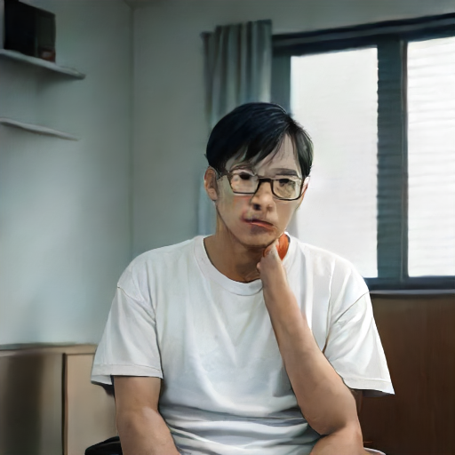
SDXS Tiny Distilled (Fast)
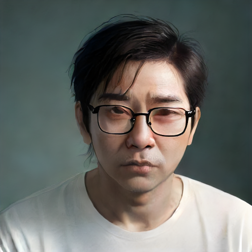
SDXS Tiny Distilled (Ultra High-End)
DreamShaper 8 LCM (Fast)
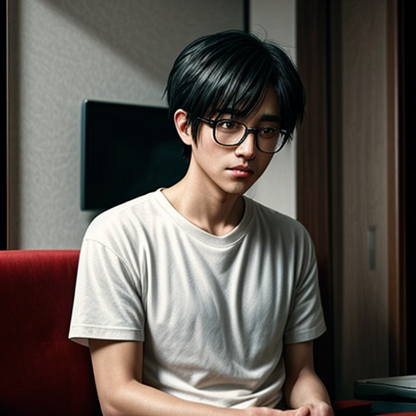
DreamShaper 8 LCM (Ultra High-End)
SD1.5 Pruned Base (Fast)
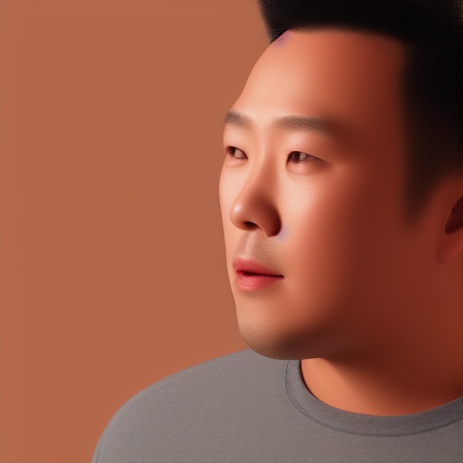
SD1.5 Pruned Base (Ultra High-End)
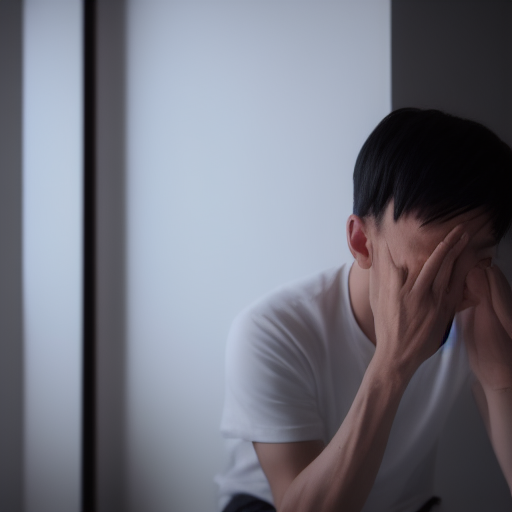
SD1.5 Base Q4_1 (Fast)
SD1.5 Base Q4_1 (Ultra High-End)
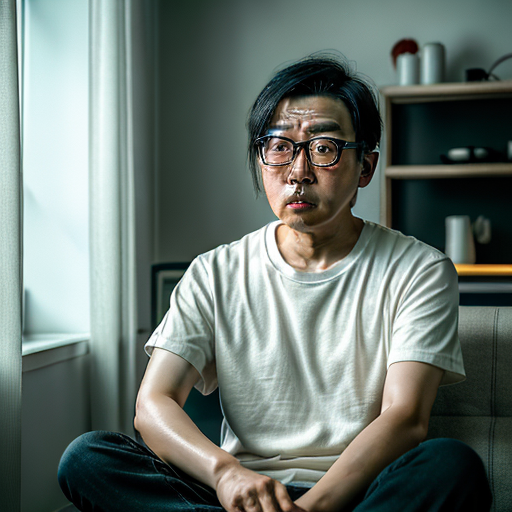
Realistic Vision V6.0 (Fast)
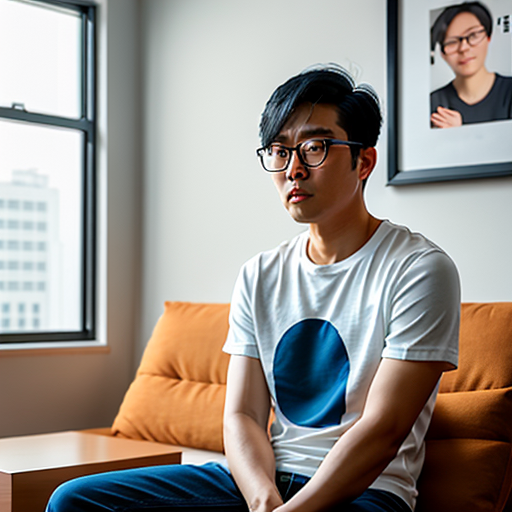
Realistic Vision V6.0 (Ultra High-End)
2. User Photo Img2Img Transformation (인물 사진 변환)
Demonstration of native Img2Img synthesis preserving facial contour and gaze direction with custom style transfer.
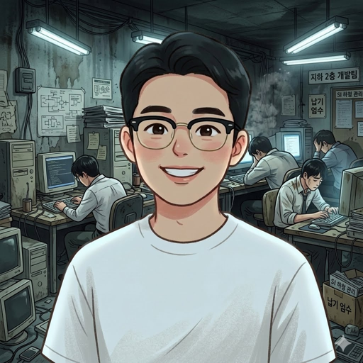
User Source Portrait (Input)
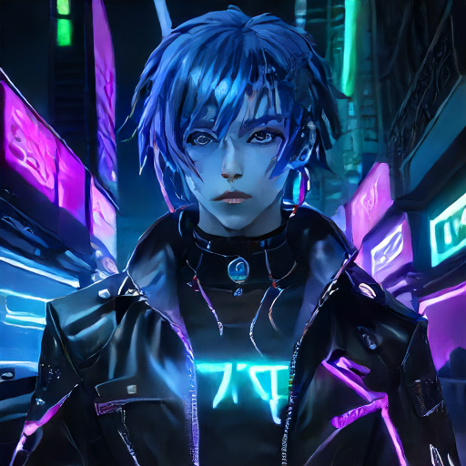
Cyberpunk Style Transformation
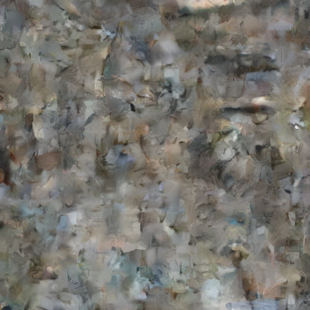
Hyperrealistic Studio Rendering
3. Creative Thematic Showcase (테마별 고해상도 렌더링)
Anime Heroine with Magical Runes
Mars Astronaut Cinematic Close-up
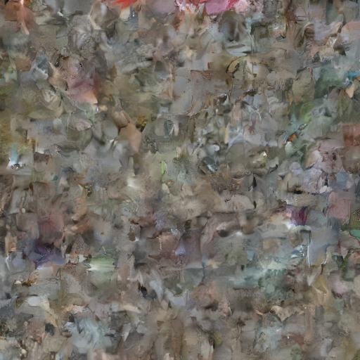
Cyberpunk Sports Car in Neo Seoul
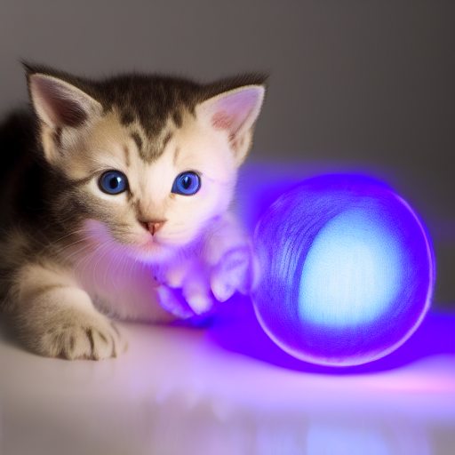
Cute Robotic Kitten with Glowing Yarn
4. Full Parameter & Prompt Matrix (전수 설정값 및 CPU 소요 시간 표)
| Preview | Category | Model / Preset | CPU (4-Core) Latency | Steps | CFG | Sampler & Schedule | Prompt & Detailed Configuration |
|---|---|---|---|---|---|---|---|
| Unified Fast | sdxs (Distilled) |
28.98s | 1 | 1.0 | euler_a (Default) |
"photorealistic portrait of a weary 30s Korean Asian man wearing glasses and a plain white t-shirt, sitting alone in a modern room, feeling unemployed and replaced by AI, tired facial expression, cinematic lighting, sharp focus, 8k uhd" | |
| Ultra High-End | sdxs (Distilled) |
20.50s | 2 | 1.0 | euler_a (Default) |
"photorealistic close-up portrait of a weary 30s Korean Asian man wearing glasses, sharp focus, 8k uhd" Negative: blur, low quality, deformed |
|
| Unified Fast | anime (LCM Distilled) |
270.63s (4.5m) | 4 | 1.5 | lcm (Default) |
"1man, anime style, weary 30s Korean Asian man wearing glasses and a plain white t-shirt, sitting alone in a modern room, tired facial expression, replaced by AI automation, masterpiece, highly detailed, sharp lineart" | |
| Ultra High-End | anime (LCM Distilled) |
490.20s (8.1m) | 10 | 1.8 | lcm (Karras, Clip-Skip: 2) |
"1man, anime style, weary 30s Korean Asian man wearing glasses and a plain white t-shirt, sitting alone in a modern room, tired facial expression, replaced by AI automation, masterpiece, highly detailed, sharp lineart" Negative: worst quality, lowres, bad hands, deformed eyes, zombie, creepy |
|
| Unified Fast | turbo (SD1.5 Pruned) |
522.95s (8.7m) | 12 | 6.0 | euler_a (Default) |
"photorealistic portrait of a weary 30s Korean Asian man wearing glasses and a plain white t-shirt, sitting alone in a modern room, feeling unemployed and replaced by AI, tired facial expression, cinematic lighting, sharp focus, 8k uhd" | |
| Ultra High-End | turbo (SD1.5 Pruned) |
1358.20s (22.6m) | 28 | 5.5 | dpm++2m (Karras, Clip-Skip: 2) |
"photorealistic close-up upper body portrait of a weary 30s Korean Asian man wearing glasses, cinematic lighting, 8k uhd" Negative: (full body, distant:1.4), (deformed iris, bad eyes:1.4), (bad anatomy:1.3), (morbid, zombie:1.2) |
|
| Unified Fast | speed (SD1.5 Base) |
578.43s (9.6m) | 12 | 6.0 | euler_a (Default) |
"photorealistic portrait of a weary 30s Korean Asian man wearing glasses and a plain white t-shirt, sitting alone in a modern room, feeling unemployed and replaced by AI, tired facial expression, cinematic lighting, sharp focus, 8k uhd" | |
| Ultra High-End | speed (SD1.5 Base) |
1305.10s (21.8m) | 28 | 5.5 | dpm++2m (Karras, Clip-Skip: 2) |
"photorealistic close-up upper body portrait of a weary 30s Korean Asian man wearing glasses in distress, sharp focus, 8k uhd" Negative: (full body, distant:1.4), (deformed iris, bad eyes:1.4), (bad anatomy:1.3), (morbid, zombie:1.2) |
|
| Unified Fast | realistic (Vision V6) |
509.57s (8.5m) | 12 | 6.0 | euler_a (Default) |
"photorealistic portrait of a weary 30s Korean Asian man wearing glasses and a plain white t-shirt, sitting alone in a modern room, feeling unemployed and replaced by AI, tired facial expression, cinematic lighting, sharp focus, 8k uhd" | |
| Ultra High-End | realistic (Vision V6) |
1548.05s (25.8m) | 30 | 5.0 | dpm++2m (Karras, Clip-Skip: 2) |
"photorealistic portrait of a weary 30s Korean Asian man wearing glasses and a plain white t-shirt, sitting alone in a modern room, feeling unemployed and replaced by AI, tired facial expression, cinematic lighting, sharp focus, 8k uhd" Negative: (deformed iris, deformed pupils, bad eyes, semi-realistic:1.4), (bad anatomy, extra digits:1.3), (morbid, dead eyes, zombie:1.2) |
|
| Img2Img Style | sdxs (Distilled) |
28.7s | 2 | 1.0 | euler_a (Strength: 0.55) |
"cyberpunk style portrait of a Korean man, glowing neon cybernetic implants, holographic HUD, sharp focus, 8k" Input: user_source_photo_512.png |
|
| Img2Img Studio | sdxs (Distilled) |
31.4s | 4 | 1.0 | dpm2 (Strength: 0.65, Karras) |
"photorealistic portrait of a young Korean software engineer smiling in high-tech research lab, cinematic lighting, sharp focus, 8k uhd" Input: user_source_photo_512.png |